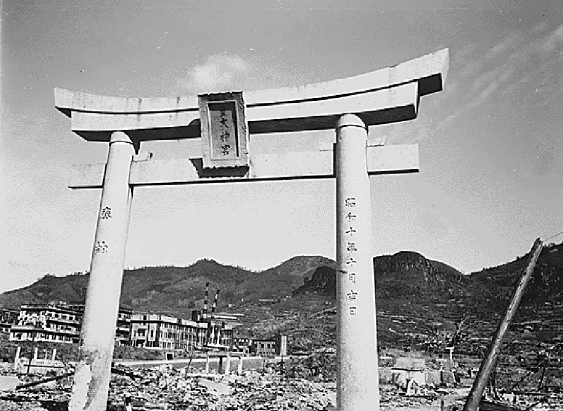
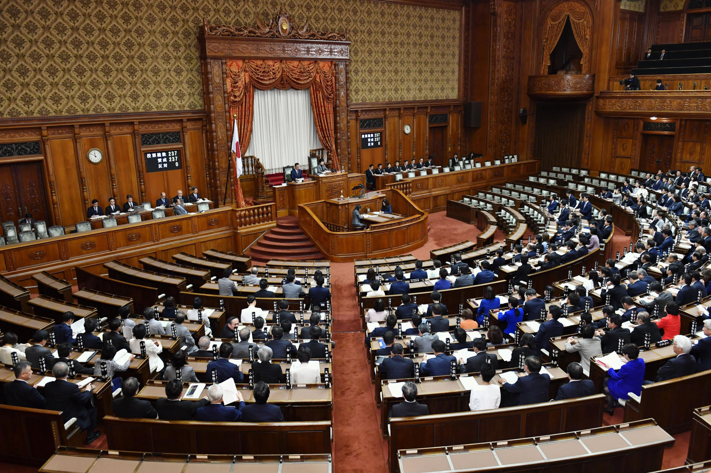
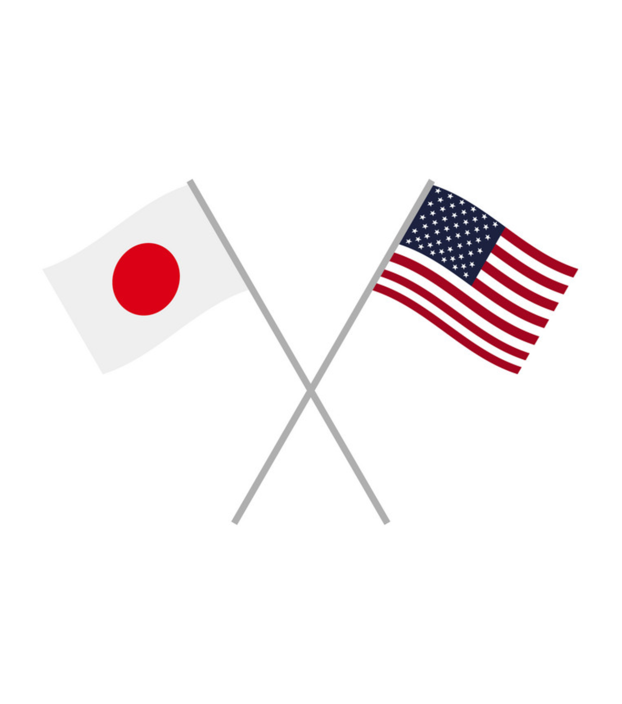

Key Events in Japan's History

1945
The Japanese economy was in ruins. Much of the population was unemployed with the recent disbandment of the country’s military, not to mention the additional 9.1 million people who were out of jobs. There were also shortages in both energy - the forced labor from Koreans and Chinese had stopped, and food - mainly rice.
Industrialization
Japan was below average when it came to advanced technology when compared to the US or China; however, this shortfall means that they have huge potential to grow their economy from where it currently lies. This, in correspondence with an underperforming agricultural sector, led to a large advancement in the country’s economy until 1990, where they realized that in order to expand further, they needed to focus on innovation, not play catch up with the rest of the world.

Government
With the added focus on rebuilding their military, Japan put their labor mobilization plan into action, resulting in much of the laborers being transferred to war industries. Along with these military actions, Japan also focused on getting newly graduated students into the workforce with private employment agencies (such as the Shudan shushoku).
In 1949, Japan implemented Dodge’s plan, which focused on economic reform. Along with balancing the national budget (thereby reducing inflation), Dodge’s plan also lowered the exchange rate with US dollars to keep export prices low. However, most of the benefits from these reforms were shown when the US imported goods from Japan to use in the Korean war.
